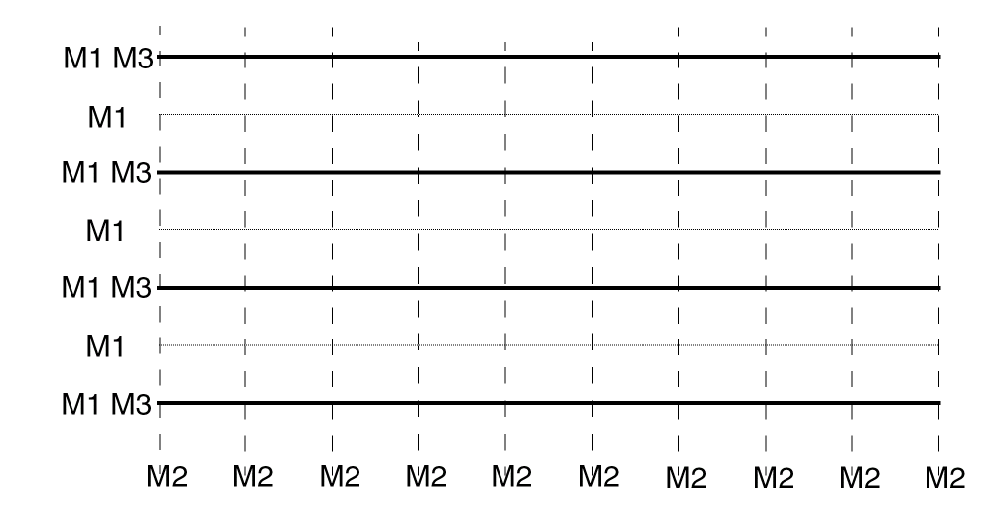
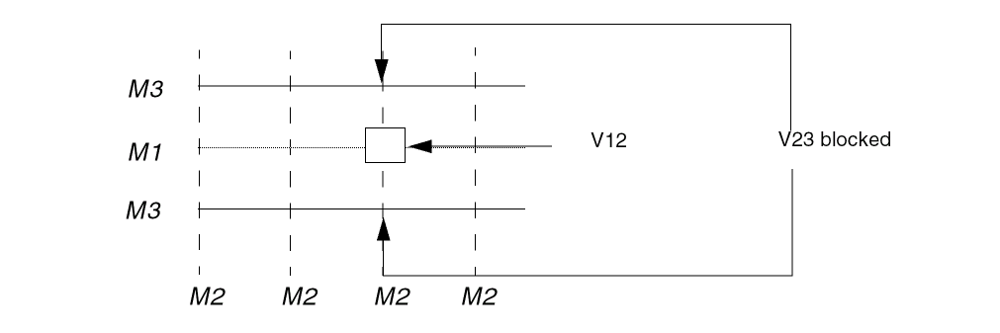

Guidelines for Setting Pitch for Layers with the Same Preferred Direction
Cells are more porous if there is free routing resource to route over the cell. A porous library allows high core utilizations. There are following guidelines for setting pitch for layers with the same preferred direction:
- Align the tracks on the layers as much as possible
-
If you cannot align the tracks, keep the pitch ratio between them simple, for example, 1:2 or 2:3.
The following figure shows a ratio of 2:1 between M1 and M3. The figure shows preferred direction tracks. Non-preferred direction tracks should be the same.

If M1 and M3 have complex ratios, such as 11:8, you can run into the following problems:
-
If you have inter-layer spacing rules between cut layers, vias will often be limited on two tracks instead of one.
In the following figure, V12 prevents the router from dropping V23 vias above and below it on the M3 tracks. If the M1 and M3 tracks were aligned, the via (V12) would block only one V23 via.
 - The above design can seriously affect memory allocation at run time. With a ratio of 11:8, you must create a non preferred M2 track for every M1 and M3 track. Because these tracks align only at every eighth track, the result is more M2 tracks than required with a 1:1 ratio, and this affects memory allocation.
- With a ratio such as11:8, your choice of cell heights is limited. This is because the cell height should be a multiple of the common denominator of the track spacing.
- If your technology allows center-stacked vias, a ratio like 11:8 will produce few.
Related Topics
Guidelines for Setting Pitch in a Cell Library
Return to top